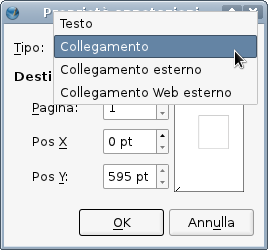
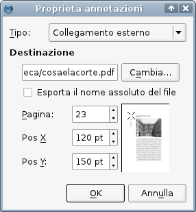
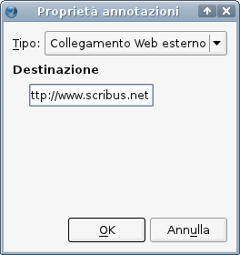

Cominciamo col chiarire qual è l'argomento di questa pagina. Vogliamo parlare della situazione in cui volete creare un collegamento cliccabile in un documento PDF, che potrebbe portare a un altro punto del documento stesso, a qualche altro documento, oppure anche a una pagina web. Non parleremo qui del collegamento tra cornici di testo, che è spiegato in Lavorare con le cornici di testo.
Il modo più diretto di creare un'area di collegamento (e questo è, alla lettera, ciò che stiamo facendo), consiste nel fare clic sull'icona Inserisci annotazione collegamento nella barra degli strumenti (presumendo che la barra degli strumenti PDF sia attiva; fate clic col tasto destro sulla barra degli strumenti per controllare quali delle barre sono visibili). Quest'icona contiene due orme di scarpa.
Ora potete creare l'area di collegamento nella posizione della pagina che desiderate. Somiglia a una cornice di testo, e vi potete inserire del testo proprio come in una vera cornice di testo. Potrebbero esserci delle buone ragioni per farlo, ad esempio per fare in modo che questa cornice sia visibile in Scribus, ma vi accorgerete che nessuno dei suoi elementi sarà visibile nel PDF finale: né il testo né gli eventuali colori di contorno e riempimento. Potreste anche pensare di dare a questa cornice un colore di riempimento con una trasparenza, per rendere visibile l'area cliccabile in Scribus, ma questa non sarà visibile nel PDF; dovreste considerarla una caratteristica di questo tipo di oggetto, e non un difetto.
Dal punto di vista pratico, ciò che si vede in Adobe Reader, ad esempio, è che il cursore cambia quando lo si sposta su questa area di collegamento; di solito il puntatore predefinito diventa una mano con il dito indice puntato. Questo non si nota facilmente e può sfuggire, quindi probabilmente vorrete creare qualche altro elemento visivo sottostante che indichi la posizione di quest'area, e forse anche la destinazione del collegamento. Quest'elemento visivo può essere un oggetto qualunque, anche una parte di una cornice di testo; in questo caso sarebbe sostanzialmente ciò che il lettore medio è abituato a considerare un testo cliccabile. È importante notare che potete anche modificare la forma, ma l'area cliccabile sarà sempre rettangolare, e corrisponderà al riquadro di delimitazione della forma, quindi non vi è motivo di fare modifiche di questo genere.
|  | Qui a sinistra è mostrata la finestra di dialogo che appare quando fate clic col tasto destro sulla cornice e selezionate Opzioni PDF > Proprietà annotazione. Come vedete, la prima voce nell'elenco a discesa è Testo. Scegliendola, si crea nel PDF un'annotazione visualizzata quando il mouse passa sull'area della cornice (annotazione “pop-up”); un doppio clic in quest'area rende l'annotazione fissa. In questo caso, potete creare il contenuto dell'annotazione inserendolo in questa cornice allo stesso modo che per una cornice di testo, ma, come prima, esso non apparirà nella pagina, ma solo in una finestra a comparsa (pop-up) quando l'annotazione è attivata. Nel PDF è presente una piccola icona che indica la presenza di un'annotazione. |
Nota: un altro metodo per creare una di queste cornici consiste nel partire con una cornice di testo, poi fare clic col tasto destro e contrassegnare Opzioni PDF > Annotazione PDF nel menù contestuale, poi fare di nuovo doppio clic e scegliere Opzioni PDF > Proprietà annotazione come sopra. Ricordate che qualunque contenuto o altre caratteristiche visibili di questa cornice di testo non appariranno nel PDF, a meno che non stiate creando un'annotazione pop-up.
 |
Con l'opzione Collegamento, potete selezionare a quale pagina e a quale punto nella pagina porterà il collegamento. Come mostrato qui a fianco, quando avete selezionato la pagina vedrete una piccola anteprima che vi aiuterà a impostare la posizione esatta della destinazione. Qualche prova in Adobe Reader mostra che, ad esempio, se volete che l'intera immagine sia visibile dopo lo spostamento, dovreste scegliere un punto leggermente a sinistra e al di sopra della cornice immagine. Questo potrebbe non essere un problema se la pagina è a un basso livello di ingrandimento ed è interamente visibile sullo schermo. |
|  | Con l'opzione Collegamento esterno, prima si apre una finestra di dialogo in cui dovete scegliere il documento PDF verso il quale il collegamento sarà diretto. Dopo ciò, come prima, potrete scegliere a quale pagina e a quale punto nella pagina porterà il collegamento. E, anche in questo caso, quando avete selezionato la pagina vedrete una piccola anteprima che vi aiuterà a impostare la posizione esatta della destinazione. |
|  | Con l'opzione Collegamento web esterno, dovrete soltanto inserire la URL a cui porta il collegamento. Il collegamento potrebbe funzionare anche se non premettete http:// all'indirizzo; questo sembra accadere con Adobe Reader e con Evince, ma non con Okular. In generale è consigliabile inserire la URL completa. Se il collegamento porta a un file che si trova su un sito, ad esempio un documento PDF, non potete indicare una certa pagina come destinazione. È inoltre possibile inserire un collegamento di tipo mailto:; in questo caso, quando il collegamento viene attivato un programma di posta elettronica dovrebbe creare un nuovo messaggio, che avrà come destinatario l'indirizzo specificato nel collegamento stesso. |